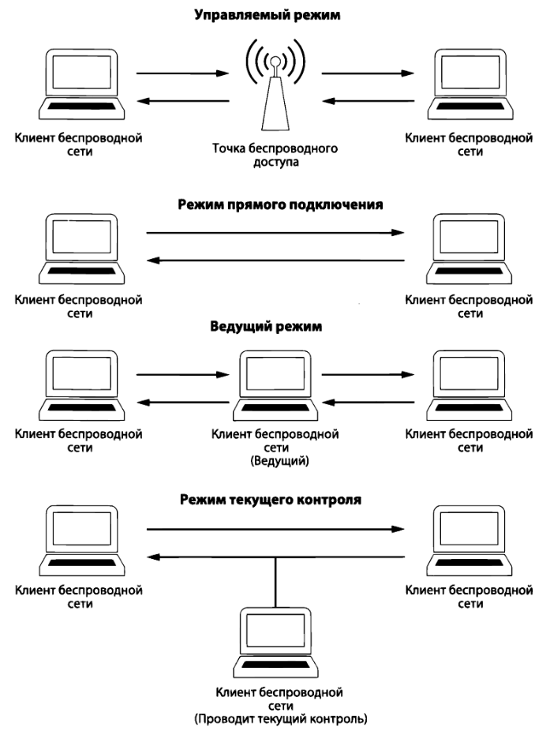

Беспроводные сети
Частотный спектр беспроводной связи распределен в среде передачи информации по отдельным физическим радиоканалам. В отличие от проводных сетей, где каждый клиент подключается к коммутатору с помощью отдельного кабеля, среда передачи данных по беспроводным сетям (WLAN - wireless local area network) является общей для всех клиентов и радиус ее действия ограничен частью частотного спектра по стандартам 802.11 IEEE.
Общий частотный спектр удалось разбить на отдельные каналы связи, где канал - это часть частотного спектра беспроводной связи. В России в диапазоне 2,4 ГГц доступными являются 13 каналов, а в диапазоне 5 ГГц — 17 каналов.
При беспроводной связи иногда нельзя полагаться на целостность данных, передаваемых в эфире, поскольку сигналы, распространяемые по радиоканалам, могут накладываться друг на друга, создавая помехи. Анализатор спектра - специальный прибор для проверки и отображения взаимных помех в определенном частотном спектре. MetaGeek выпускает Wi-Spy, подключаемое к компьютеру через USB-порт и способное контролировать весь спектр сигналов по стандарту 802.11. Программы inSSIDer или Chanalyzer позволяют выводить анализируемый частотный спектр в графическом виде, чтобы упростить процесс диагностики.
Перехват пакетов
Традиционный анализ пакетов в беспроводной сети может быть одновременно проведен только в одном канале связи. Существуют приложения, в которых применяется методика переключением каналов, позволяющая быстро сменить каналы в целях сбора данных.
Режимы работы адаптера:
- Управляемый режим (Managed mode) применяется в том случае, если клиент беспроводной сети подключается непосредственной к точке беспроводного доступа.
- Режим прямого подключения (Ad hoc mode) применяется в том случае, если организована беспроводная сеть, в которой устройства подключаются непосредственно друг к другу. В этом режиме два клиента разделяют обязанности, которые обычно возлагаются на точку беспроводного доступа.
- Ведущий режим (Master mode). Адаптеру разрешается работать вместе со специальным программным драйвером, чтобы компьютер, на котором установлен этот адаптер, действовал в качестве точки беспроводного доступа для других устройств.
- Режим текущего контроля (Monitor mode) применяется в том случае, если клиенту требуется остановить передачу и прием данных и вместо этого прослушивать пакеты, распространяемые в эфире. Так же режим может называться RFMON, т.е. режимом радиочастотного контроля.

Каждой точке беспроводного доступа в сети присваивается однозначно определяющий её идентификатор базового набора услуг (Basic Service Set Identifier, BSSID). Этот идентификатор посылается в каждом беспроводном пакете управления и пакете данных из передающей точки доступа. Зная идентификатор BSSID, для ее исследования достаточно найти пакет, отправленный из этой конкретной точки.
В Linux с помощью команды iwconfig можно узнать об интерфейсах беспроводной сети, а так же
iwconfig eth1 mode monitor: перевести интерфейс в режим текущего контроля (прослушки);iwconfig eth1 up: включить интерфейс;iwconfig eth1 channel З: сменить канал связи.
При анализе пакетов в WireShark рекомендуется добавить столбцы Channel (канал связи), Signal Strength (мощность сигнала) и Data Rate (скорость передачи данных).
Структура пакета
Главное отличие пакетов в беспроводной сети от пакетов в проводной сети заключается в наличии дополнительного заголовка. Этот заголовок второго уровня содержит дополнительные сведения о пакете и среде, в которой он передается. Имеются следующие типы пакетов: - Пакеты управления (Management) служат для установки связи между хостами на втором уровне (пакеты аутентификации, установки связи и сигнальные пакеты). - Пакеты контроля (Control) обеспечивают гарантированную доставку пакетов управления и данных и предназначены для управления процессом устранения перегрузки (пакеты с запросами на передачу и подтверждением готовности к приему). - Пакеты данных (Data) содержат конкретные данные и относятся к тем типам пакетов, которые могут быть направлены из беспроводной сети в проводную.
Безопасность беспроводных сетей
Стоит упомянуть, если применяется шифрование на другом уровне модели OSI (например, по протоколу SSL или SSH), сетевой трафик уже будет зашифрован при переходе на более низкие уровни.
Первоначально наиболее предпочтительным методом защиты данных считалось соблюдение стандарта WEP (Wired Equivalent Privacy - эквивалент конфиденциальности проводных сетей), но в нём были найдены слабые места в алгоритме управления ключами шифрования. Для повышения безопасности были разработаны новые стандарты, в том числе WPA (Wi-Fi Protected Access - защищенный беспроводный доступ к сети), WPA2 и WPA3 (с более безопасным алгоритмом).
Аутентификация по алгоритму WEP:
- Точка беспроводного доступа пытается выяснить, есть ли у беспроводного клиента WЕР-ключ.
- В ответ на этот запрос беспроводный клиент расшифровывает текст запроса с помощью WЕР-ключа и возвращает его в открытом виде. WЕР-ключ вводится пользователем при попытке подключения к беспроводной сети.
- Точка беспроводного доступа уведомляет беспроводного клиента об удачном завершении процесса аутентификации.
Аутентификация по алгоритму WPA:
- Посылается сигнальный пакет, переданный в широковещательном режиме из точки беспроводного доступа.
- Как только сигнальный пакет будет получен, беспроводный клиент передает в широковещательном режиме зондирующий запрос (probe request), который принимается точкой беспроводною доступа.
- После этого происходит обмен пакетами с запросами на аутентификацию и установку связи между беспроводным клиентом и точкой беспроводного доступа.
- При неудачной попытке аутентификации будут направлены пакеты по протоколу EAPoL (Extensible Authentication Protocol over LAN - расширяемый протокол аутентификации в локальной сети).